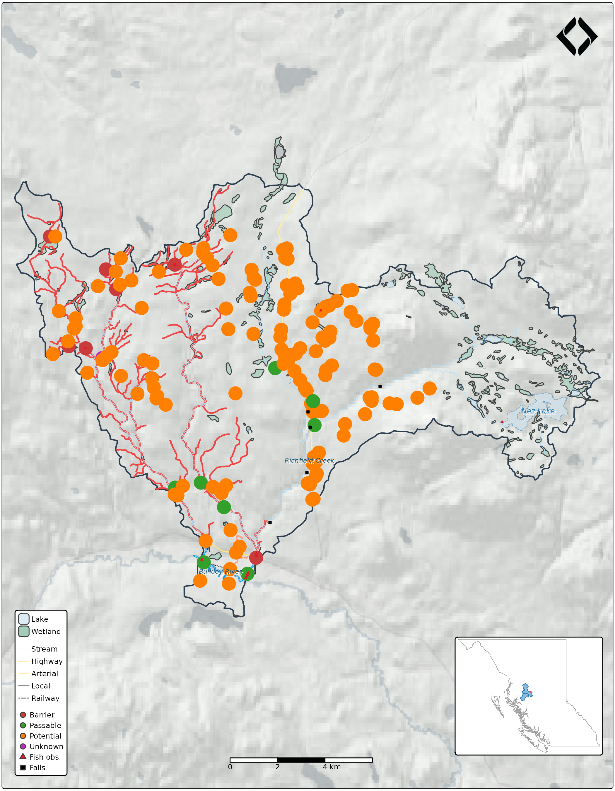

gq translates registry styles into tmap arguments. This vignette shows a complete map composition — basemap, layers, legend, logo, keymap — following New Graph cartographic conventions.
Study area: Neexdzii Kwa subbasin
A subbasin of the Neexdzii Kwa (Upper Bulkley River) in the traditional territory of the Wet’suwet’en, bounded by Johnny David Creek (downstream) and Richfield Creek (upstream). ~212 km², pulled from the BC Freshwater Atlas via fresh.
library(gq)
library(sf)
#> Linking to GEOS 3.12.1, GDAL 3.8.4, PROJ 9.4.0; sf_use_s2() is TRUE
library(tmap)
library(maptiles)
sf_use_s2(FALSE)
#> Spherical geometry (s2) switched off
data(neexdzii_wsd, neexdzii_streams, neexdzii_habitat,
neexdzii_lakes, neexdzii_wetlands,
neexdzii_crossings, neexdzii_fish_obs, neexdzii_falls,
neexdzii_roads, neexdzii_railway, neexdzii_bc, neexdzii_wsg,
package = "gq")
cat("Watershed:", round(as.numeric(st_area(neexdzii_wsd)) / 10000), "ha\n")
#> Watershed: 21218 ha
cat("Streams:", nrow(neexdzii_streams), "| Habitat:", nrow(neexdzii_habitat), "\n")
#> Streams: 1074 | Habitat: 397
cat("Crossings:", nrow(neexdzii_crossings), "| Fish obs:", nrow(neexdzii_fish_obs),
"| Falls:", nrow(neexdzii_falls), "\n")
#> Crossings: 146 | Fish obs: 63 | Falls: 5
cat("Lakes:", nrow(neexdzii_lakes), "| Wetlands:", nrow(neexdzii_wetlands), "\n")
#> Lakes: 42 | Wetlands: 175
cat("Roads:", nrow(neexdzii_roads), "| Railway:", nrow(neexdzii_railway), "\n")
#> Roads: 44 | Railway: 1Load styles from the registry
One call to gq_reg_main() loads the master registry.
gq_style() resolves any layer by name — no manual color
extraction needed.
reg <- gq_reg_main()
# gq_style() returns backend-agnostic style info by name
gq_style(reg, "lake")
#> $type
#> [1] "polygon"
#>
#> $fill
#> $fill$color
#> [1] "#dcecf4"
#>
#> $fill$opacity
#> [1] 0.7
#>
#>
#> $stroke
#> $stroke$color
#> [1] "#1f78b4"
#>
#> $stroke$width
#> [1] 0.2
gq_style(reg, "railway")
#> $type
#> [1] "line"
#>
#> $stroke
#> $stroke$color
#> [1] "#000000"
#>
#> $stroke$width
#> [1] 0.4
# gq_tmap_style() wraps gq_style() with tmap-specific args
# For classified layers it wires up tm_scale_categorical() automatically
gq_tmap_style(reg, "crossings_pscis_assessment")
#> $fill
#> [1] "barrier_result_code"
#>
#> $fill.scale
#> $FUN
#> [1] "tmapScaleCategorical"
#>
#> $n.max
#> [1] 30
#>
#> $values
#> BARRIER PASSABLE POTENTIAL UNKNOWN
#> "#ca3c3c" "#33a02c" "#ff7f00" "#bf2ac4"
#>
#> $values.repeat
#> [1] TRUE
#>
#> $values.range
#> [1] NA
#>
#> $values.scale
#> [1] NA
#>
#> $value.na
#> [1] NA
#>
#> $value.null
#> [1] NA
#>
#> $value.neutral
#> [1] NA
#>
#> $levels
#> NULL
#>
#> $levels.drop
#> [1] FALSE
#>
#> $labels
#> [1] "Barrier" "Passable" "Potential" "Unknown"
#>
#> $label.na
#> [1] NA
#>
#> $label.null
#> [1] NA
#>
#> $label.format
#> list()
#>
#> attr(,"class")
#> [1] "tm_scale_categorical" "tm_scale" "list"
#>
#> $fill.legend
#> $show
#> [1] FALSE
#>
#> $called
#> [1] "show"
#>
#> $title
#> [1] NA
#>
#> $xlab
#> [1] NA
#>
#> $ylab
#> [1] NA
#>
#> $group_id
#> [1] NA
#>
#> $group_type
#> [1] "tm_legend"
#>
#> $z
#> [1] NA
#>
#> attr(,"class")
#> [1] "tm_legend" "tm_component" "list"
#>
#> $size
#> [1] 1Data prep
Filter streams by order and build label points. Where the bundled
data comes from a different source than the registry (e.g., bcfishpass
vs WHSE), the field parameter in
gq_tmap_style() maps the alternative column name to the
same style — no column renames needed. See
inst/registry/xref_layers.csv for the cross-reference.
# Streams: order >= 3 for display, >= 5 for labels
streams_display <- neexdzii_streams[neexdzii_streams$stream_order >= 3, ]
# Stream labels: dissolve named streams to single point per name
streams_named <- neexdzii_streams[
!is.na(neexdzii_streams$gnis_name) & neexdzii_streams$stream_order >= 5, ]
if (nrow(streams_named) > 0) {
stream_labels <- do.call(rbind, lapply(
split(streams_named, streams_named$gnis_name),
function(x) {
combined <- st_union(x)
pt <- st_point_on_surface(combined)
st_sf(gnis_name = x$gnis_name[1], geometry = pt, crs = st_crs(x))
}
))
} else {
stream_labels <- streams_named[0, ]
}
#> although coordinates are longitude/latitude, st_union assumes that they are
#> planar
#> Warning in st_point_on_surface.sfc(combined): st_point_on_surface may not give
#> correct results for longitude/latitude data
#> although coordinates are longitude/latitude, st_union assumes that they are
#> planar
#> Warning in st_point_on_surface.sfc(combined): st_point_on_surface may not give
#> correct results for longitude/latitude data
# Lake labels
lakes_named <- neexdzii_lakes[!is.na(neexdzii_lakes$gnis_name_1) &
neexdzii_lakes$gnis_name_1 != "", ]Basemap: Positron x hillshade blend
Label-free raster basemap gives terrain relief without competing with our own labels. At sub-watershed scale (zoom 10+), Positron-NoLabels blended with hillshade works well.
# Compute bbox that matches the canvas aspect ratio (7:9) to fill the page
bbox <- st_bbox(neexdzii_wsd)
target_asp <- 7 / 9 # fig.width / fig.height
dx <- bbox["xmax"] - bbox["xmin"]
dy <- bbox["ymax"] - bbox["ymin"]
# Approximate aspect ratio correction for latitude
lat_mid <- (bbox["ymin"] + bbox["ymax"]) / 2
cos_lat <- cos(lat_mid * pi / 180)
geo_asp <- (dx * cos_lat) / dy
if (geo_asp > target_asp) {
# Too wide — expand height
new_dy <- (dx * cos_lat) / target_asp
pad <- (new_dy - dy) / 2
bbox["ymin"] <- bbox["ymin"] - pad
bbox["ymax"] <- bbox["ymax"] + pad
} else {
# Too tall — expand width
new_dx <- (dy * target_asp) / cos_lat
pad <- (new_dx - dx) / 2
bbox["xmin"] <- bbox["xmin"] - pad
bbox["xmax"] <- bbox["xmax"] + pad
}
# Small margin so features don't touch the frame
y_pad <- (bbox["ymax"] - bbox["ymin"]) * 0.02
x_pad <- (bbox["xmax"] - bbox["xmin"]) * 0.02
bbox["ymin"] <- bbox["ymin"] - y_pad
bbox["ymax"] <- bbox["ymax"] + y_pad
bbox["xmin"] <- bbox["xmin"] - x_pad
bbox["xmax"] <- bbox["xmax"] + x_pad
bbox_sf <- st_as_sfc(bbox) |> st_set_crs(4326)
positron <- get_tiles(bbox_sf, provider = "CartoDB.PositronNoLabels",
zoom = 10, crop = TRUE)
relief <- get_tiles(bbox_sf, provider = "Esri.WorldShadedRelief",
zoom = 10, crop = TRUE)
relief_rs <- terra::resample(relief, positron)
p_n <- positron / 255
r_g <- terra::mean(relief_rs) / 255
blended <- terra::clamp(p_n * (r_g ^ 0.5) * 255, lower = 0, upper = 255)
basemap_stars <- stars::st_as_stars(blended)Keymap inset
Small overview map showing the subbasin within the Bulkley/Morice watershed groups and BC.
# Watershed group fill matches lake stroke color from registry
lake_sty <- gq_style(reg, "lake")
keymap <- tm_shape(neexdzii_bc) +
tm_borders(col = "grey60", lwd = 0.5) +
tm_shape(neexdzii_wsg) +
tm_polygons(fill = lake_sty$stroke$color, fill_alpha = 0.5,
col = lake_sty$stroke$color, lwd = 0.5) +
tm_shape(neexdzii_wsd) +
tm_polygons(fill = "#ef4545", col = "#ef4545", lwd = 0.3) +
tm_layout(
frame = TRUE,
bg.color = "white",
inner.margins = c(0.02, 0.02, 0.02, 0.02)
)Main map
Draw order matters: polygons first, then habitat lines, base streams, lakes on top, transport, point features (crossings, fish, falls), then labels last.
bb_box <- st_as_sfc(bbox, crs = st_crs(neexdzii_wsd))
logo_path <- system.file("logo", "nge_icon_200.png", package = "gq")
tmap_mode("plot")
#> ℹ tmap modes "plot" - "view"
#> ℹ toggle with `tmap::ttm()`
# Pull styles from registry — all colors trace back to gq_reg_main()
stream_sty <- gq_style(reg, "streams_all")
railway_sty <- gq_style(reg, "railway")
fish_sty <- gq_style(reg, "bcfishobs_fiss_fish_observations")
falls_sty <- gq_style(reg, "fiss_obstacles")
lake_sty <- gq_style(reg, "lake")
xing_cls <- gq_style(reg, "crossings_pscis_assessment")$classification
# Road legend: only types present in the data
road_cls <- gq_style(reg, "roads_dra")$classification
road_in <- names(road_cls$values) %in% unique(neexdzii_roads$road_type)
road_leg_values <- road_cls$values[road_in]
road_leg_labels <- road_cls$labels[road_in]
# Polygon layers — do.call() with gq_tmap_style() directly
m <- tm_shape(basemap_stars) +
tm_rgb() +
tm_shape(bb_box) +
tm_borders(lwd = 0, col = NA) +
tm_shape(neexdzii_wsd) +
tm_polygons(fill_alpha = 0, col = "#2c3e50", lwd = 1.5) +
tm_shape(neexdzii_wetlands) +
do.call(tm_polygons, gq_tmap_style(reg, "wetland"))
# Salmon habitat — classified by mapping_code (xref: streams_salmon_vw uses
# mapping_code, registry expects mapping_code_salmon from WHSE source)
m <- m +
tm_shape(neexdzii_habitat) +
do.call(tm_lines, gq_tmap_style(reg, "streams_salmon", field = "mapping_code"))
# Base streams on top of habitat — simple style, width scaled up for display
m <- m +
tm_shape(streams_display) +
tm_lines(col = stream_sty$classification$values[[1]],
lwd = stream_sty$classification$widths[[1]] * 2) +
tm_shape(neexdzii_lakes) +
do.call(tm_polygons, gq_tmap_style(reg, "lake"))
# Lake labels — color from registry
if (nrow(lakes_named) > 0) {
m <- m + tm_shape(lakes_named) +
tm_text("gnis_name_1", size = 0.5, col = lake_sty$stroke$color,
fontface = "italic",
options = opt_tm_text(shadow = TRUE))
}
# Roads — classified by transport_line_type_code, bundled data column is
# road_type (xref: alias from data-raw query)
m <- m +
tm_shape(neexdzii_roads) +
do.call(tm_lines, gq_tmap_style(reg, "roads_dra", field = "road_type"))
# Railway — base + white dashed overlay, colors from registry
if (nrow(neexdzii_railway) > 0) {
m <- m + tm_shape(neexdzii_railway) +
tm_lines(col = railway_sty$stroke$color,
lwd = railway_sty$stroke$width * 2) +
tm_shape(neexdzii_railway) +
tm_lines(col = "white", lwd = railway_sty$stroke$width, lty = "42")
}
# Crossings — classified by barrier_status (xref: bcfishpass.crossings uses
# barrier_status, registry expects barrier_result_code from PSCIS WHSE)
m <- m +
tm_shape(neexdzii_crossings) +
do.call(tm_dots, gq_tmap_style(reg, "crossings_pscis_assessment",
field = "barrier_status"))
# Fish observations — shape and color from registry
if (nrow(neexdzii_fish_obs) > 0) {
m <- m + tm_shape(neexdzii_fish_obs) +
tm_symbols(shape = 24, fill = fish_sty$mark$color,
col = fish_sty$mark$color, size = 0.12)
}
# Falls — shape and color from registry
if (nrow(neexdzii_falls) > 0) {
m <- m + tm_shape(neexdzii_falls) +
tm_symbols(shape = 22, fill = falls_sty$mark$color,
col = falls_sty$mark$color, size = 0.2)
}
# Stream labels
if (nrow(stream_labels) > 0) {
m <- m + tm_shape(stream_labels) +
tm_text("gnis_name", size = 0.45, fontface = "italic", col = "#1a5276",
options = opt_tm_text(shadow = TRUE, remove_overlap = TRUE))
}
# Manual legends — all colors from gq_style()
m <- m +
tm_add_legend(
type = "polygons",
labels = c("Lake", "Wetland"),
fill = c(gq_style(reg, "lake")$fill$color,
gq_style(reg, "wetland")$fill$color)
) +
tm_add_legend(
type = "lines",
labels = c("Stream", road_leg_labels, "Railway"),
col = c(stream_sty$classification$values[[1]],
unname(road_leg_values), railway_sty$stroke$color),
lwd = c(0.5, rep(0.8, length(road_leg_values)), 0.8),
lty = c("solid", rep("solid", length(road_leg_values)), "twodash")
) +
tm_add_legend(
type = "symbols",
labels = c(xing_cls$labels, "Fish obs", "Falls"),
fill = c(unname(xing_cls$values),
fish_sty$mark$color, falls_sty$mark$color),
shape = c(21, 21, 21, 21, 24, 22),
size = c(0.4, 0.4, 0.4, 0.4, 0.35, 0.4)
)
# Layout: four-corner rule
# - Legend: bottom-left
# - Logo: top-right
# - Scalebar: bottom-center
# - Keymap: bottom-right (via grid viewport)
m <- m +
tm_scalebar(
breaks = c(0, 2, 4, 6),
text.size = 0.5,
position = c("center", "bottom"),
margins = c(0, 0, 0, 0)
) +
tm_logo(logo_path, position = c("right", "top"), height = 2.5,
margins = c(0, 0, 0, 0)) +
tm_layout(
frame = TRUE,
frame.lwd = 0.5,
asp = 0,
legend.position = c("left", "bottom"),
legend.frame = TRUE,
legend.bg.color = "white",
legend.bg.alpha = 0.85,
legend.text.size = 0.5,
legend.title.size = 0.6,
inner.margins = c(0.001, 0.001, 0.001, 0.001),
outer.margins = c(0.003, 0.003, 0.003, 0.003),
meta.margins = 0
)
print(m)
#> Warning: labels do not have the same length as levels, so they are repeated
#> Warning: labels do not have the same length as levels, so they are repeated
print(keymap, vp = grid::viewport(
x = 0.86, y = 0.12, width = 0.25, height = 0.22
))
Every color on this map traces back to
gq_reg_main():
-
Simple layers (lake, wetland, streams, railway) use
gq_tmap_style(reg, "name")directly -
Classified layers (crossings, roads, habitat) use
do.call()withgq_tmap_style()— classification field, colors, and labels all come from the registry -
Legend colors use
gq_style()— change a color in the registry, every element updates